判斷文
判斷文
你需要的是上課、按摩，還是先做一次 AI 體態檢測？
上課、按摩還是AI體態檢測？先依放鬆、規律活動、站姿角度或症狀評估等需求比較，不用符合幾項感受就決定預約。
 決策文
決策文
哪些人不必急著做 AI 體態檢測？先用這份判斷表決定
AI體態檢測是否符合你的需求？對照站姿角度、症狀原因與上課期待，了解哪些情況可以先不用做，以及預約前要問清楚的內容。
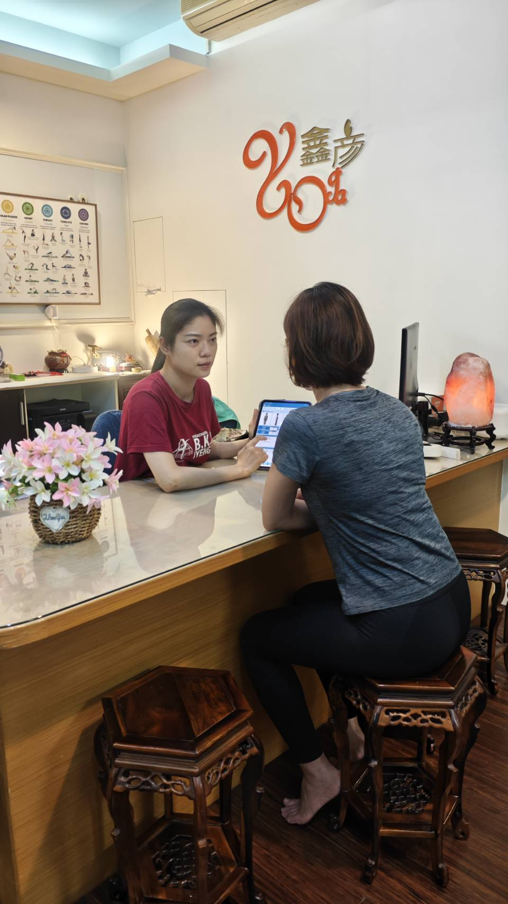
流程文第一次做 AI 體態檢測，現場到底會發生什麼事？
還沒做過 AI 體態檢測，不確定現場會發生什麼事？從到店、拍攝到老師當面解讀，把實際流程一次講清楚。
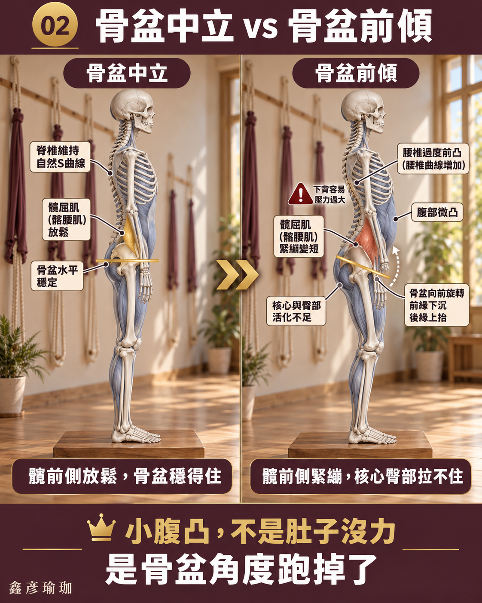
骨盆前傾就等於小腹凸？先看懂骨盆位置與核心用力的真實關係骨盆・下半身 · 閱讀約 5 分鐘 →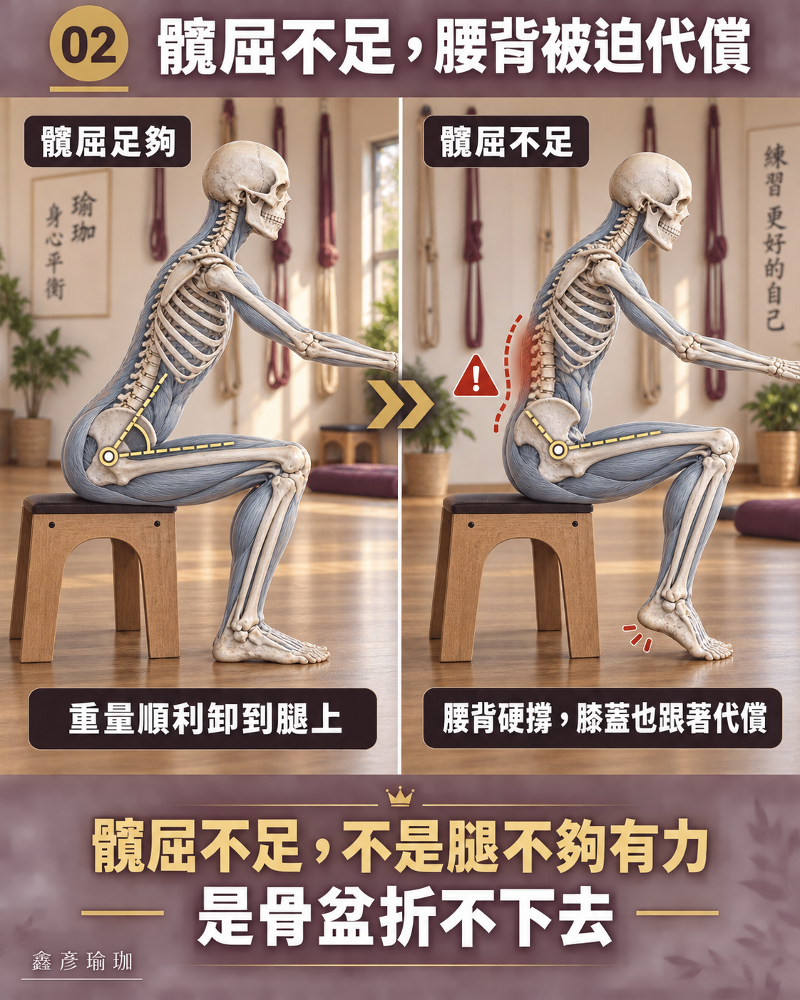
蹲下去、站起來有點吃力？深蹲能力跟日常活動力的關係骨盆・下半身 · 閱讀約 6 分鐘 →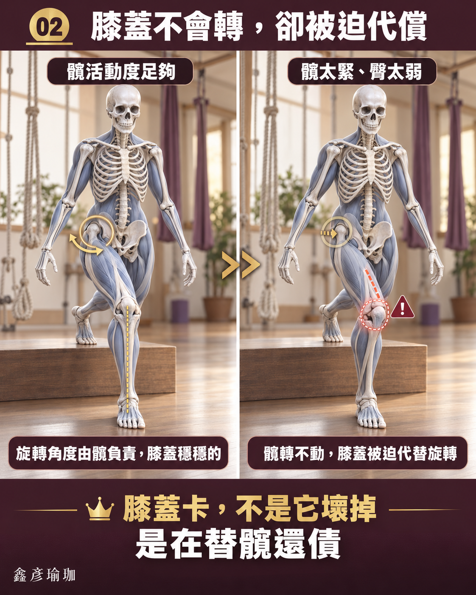
膝蓋卡卡不一定在膝蓋？先看懂髖關節活動度與下肢代償的關係骨盆・下半身 · 閱讀約 5 分鐘 → 久坐讓屁股「失憶」了嗎？先看懂臀肌鈍化與骨盆支撐的真實機制骨盆・下半身 · 閱讀約 5 分鐘 →
久坐讓屁股「失憶」了嗎？先看懂臀肌鈍化與骨盆支撐的真實機制骨盆・下半身 · 閱讀約 5 分鐘 →
 腰痠是核心太弱還是下背太緊？先看懂骨盆中立與深層核心的支撐關係骨盆・下半身 · 閱讀約 5 分鐘 →
腰痠是核心太弱還是下背太緊？先看懂骨盆中立與深層核心的支撐關係骨盆・下半身 · 閱讀約 5 分鐘 →
 高低肩、長短腳是骨盆在歪嗎？先看懂身體兩側張力與生活習慣的關係骨盆・下半身 · 閱讀約 5 分鐘 →
高低肩、長短腳是骨盆在歪嗎？先看懂身體兩側張力與生活習慣的關係骨盆・下半身 · 閱讀約 5 分鐘 →
 脖子後面凸起是「富貴包」嗎？先分清楚姿勢與不明腫塊圓肩駝背 · 閱讀約 4 分鐘 →
脖子後面凸起是「富貴包」嗎？先分清楚姿勢與不明腫塊圓肩駝背 · 閱讀約 4 分鐘 →
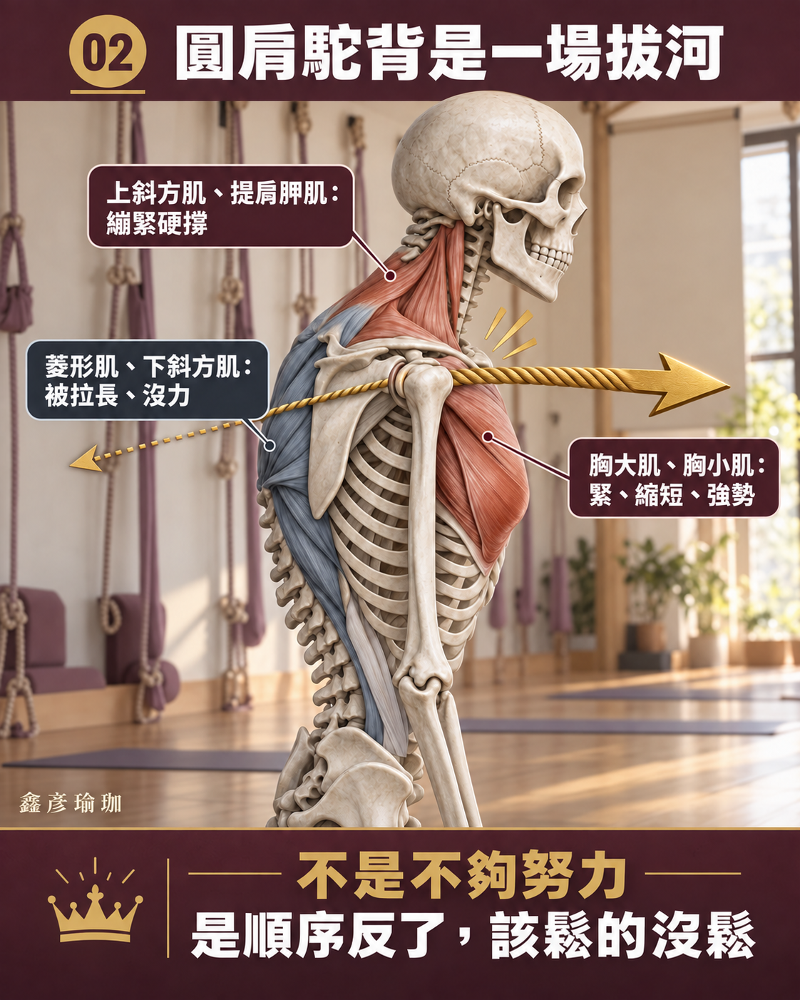
圓肩駝背，先鬆哪裡、先練哪裡？圓肩駝背 · 閱讀約 5 分鐘 →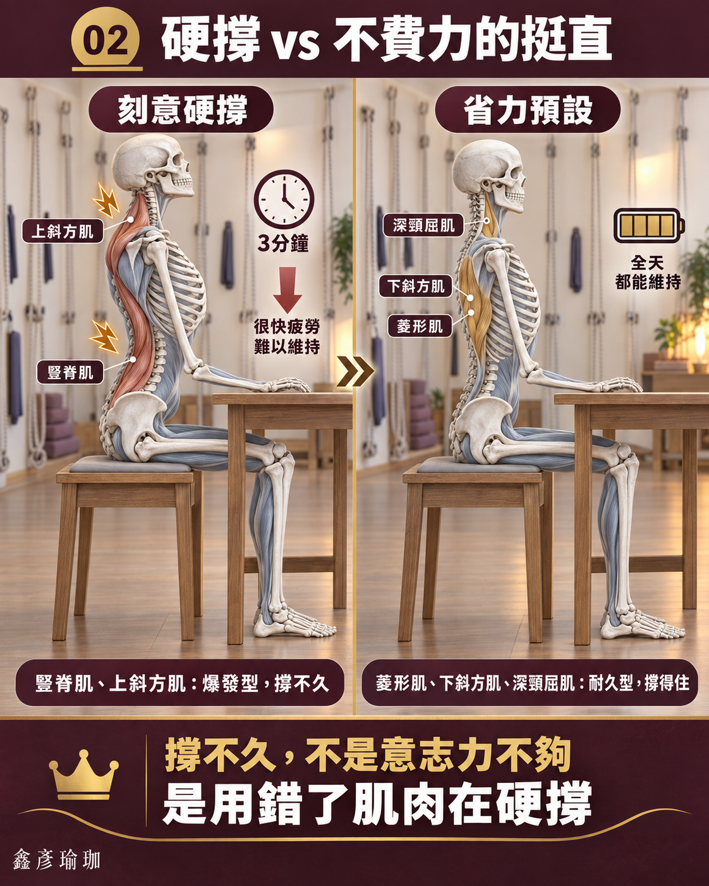
為什麼「抬頭挺胸」撐不過三分鐘？圓肩駝背 · 閱讀約 4 分鐘 →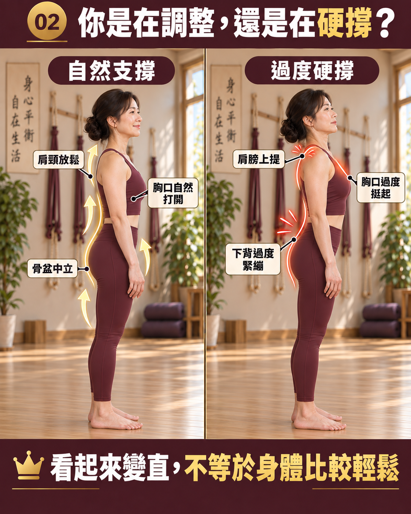
代償越想把姿勢撐好，越累？你可能在用補償代替調整
越想站直、坐正卻更累？先整理刻意用力的感受，再和老師討論動作、支撐與環境安排。
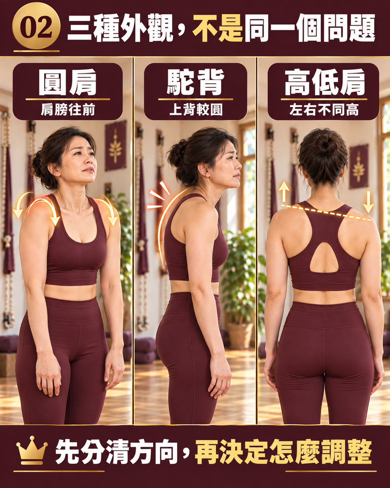
體態圓肩、駝背、高低肩一樣嗎？先做問題分流
圓肩、駝背、高低肩看起來都像姿勢不好，但成因與優先順序可能不同。用分流方式理解差異，避免套用同一套方法。
分流文
沒有很痛，身體卻怪怪的？先整理這 5 種日常感受
沒有很痛但坐站或活動時覺得怪怪的？整理換姿勢、挺直費力、左右差異等五種日常感受，不計分、不自行診斷，依需求找下一步。
 判斷文
判斷文
AI 體態檢測報告怎麼看？做完之後老師會跟你講什麼
姿勢角度能提供哪些參考、哪些問題仍不能回答？了解老師當面解讀、回測條件與你可以先問的事情。
 判斷文
判斷文
按摩槍、筋膜刀有用嗎？跟壁繩瑜伽差在哪
按摩槍、筋膜刀、滾筒這些自我放鬆工具到底有沒有用？用「放鬆」和「調整」兩個層次，幫你搞懂該怎麼搭配使用。
決策文40 歲、50 歲才想調整體態，會不會太晚了？熟齡開始調整的真實優勢
這個年紀才開始還有用嗎？從身體改變的原理談起，說明為什麼調整體態幾乎沒有太晚，以及中年開始反而有的優勢。
肩頸
肩頸反覆緊，不一定是肩頸的問題：什麼時候不該再一直拉？
肩頸反覆緊，先整理出現時間與日常影響，了解什麼時候需要醫療評估，以及站姿觀察的界線。
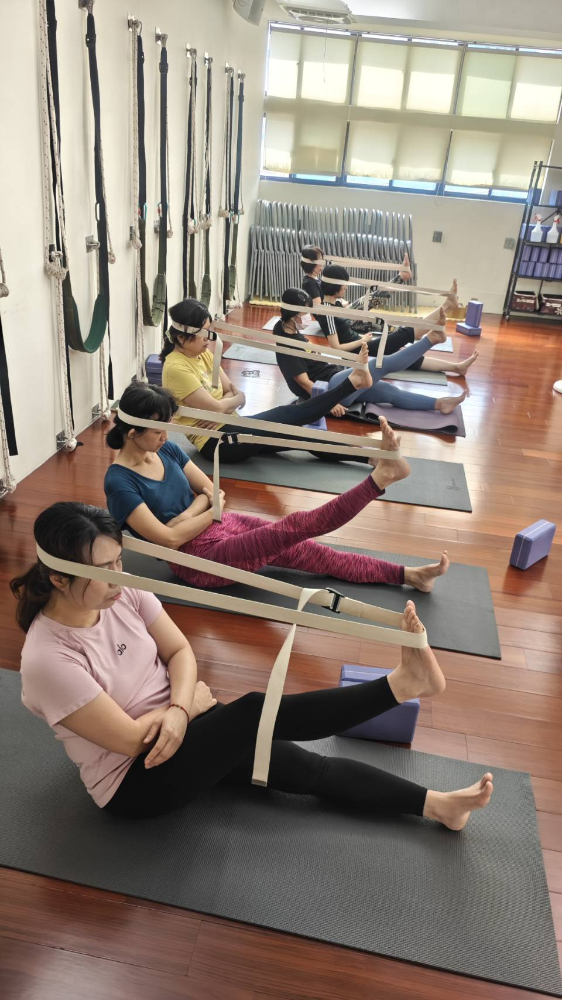
判讀文AI體態檢測量出來的是數字，老師要看的是「你在哪裡撐」
AI體態檢測不是量出一個角度數字就結束。真正的判讀，是老師接下來問的問題：你看到的是歪、是緊，但身體真正在做的，是靠哪裡撐住。
 圓肩就是上交叉症候群嗎？先看懂這個名詞的意思與限制圓肩駝背 · 閱讀約 4 分鐘 →
圓肩自我檢查：3 個居家觀察，別用來判定嚴重度圓肩駝背 · 閱讀約 4 分鐘 →
圓肩就是上交叉症候群嗎？先看懂這個名詞的意思與限制圓肩駝背 · 閱讀約 4 分鐘 →
圓肩自我檢查：3 個居家觀察，別用來判定嚴重度圓肩駝背 · 閱讀約 4 分鐘 →
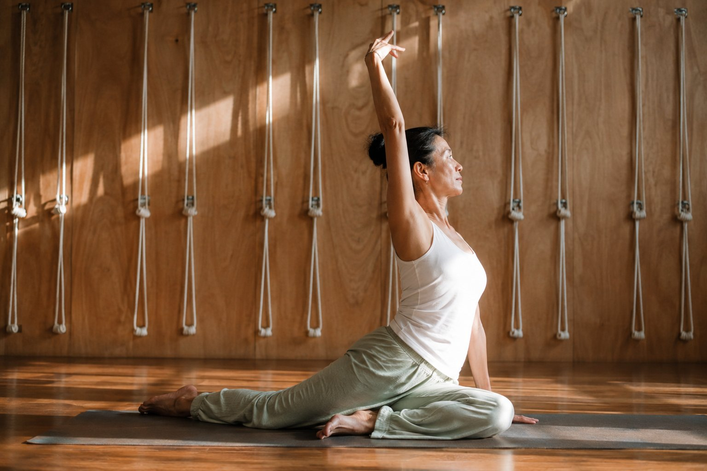
駝背會讓你變矮嗎？把脊椎「拉回來」的真相圓肩駝背 · 閱讀約 6 分鐘 →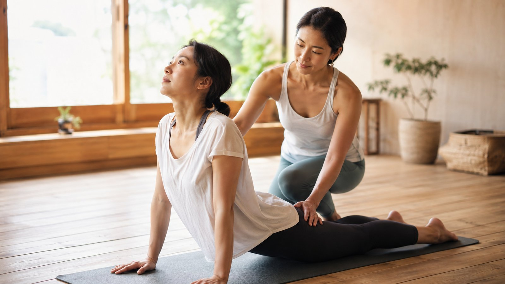
練了一陣子卻卡關了？面對練習停滯期的 4 個調整方向圓肩駝背 · 閱讀約 5 分鐘 →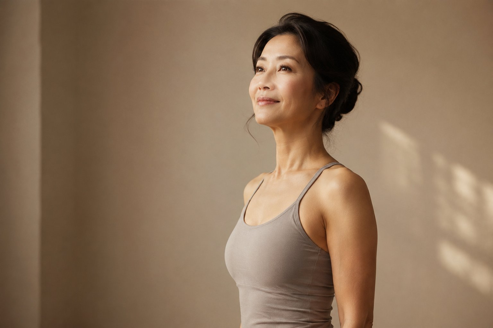
體態如何悄悄讓你「顯老」？駝背與氣色、視覺年齡的關係圓肩駝背 · 閱讀約 5 分鐘 → 為什麼照片、視訊裡的自己特別駝？從日常微駝到鏡頭角度的體態真相圓肩駝背 · 閱讀約 4 分鐘 → 手臂放下來就鬆垮？蝴蝶袖可能跟姿勢有關，不只是脂肪圓肩駝背 · 閱讀約 7 分鐘 →
媽媽手、滑鼠手、網球肘，都是手痛，差在哪？肩頸緊繃 · 閱讀約 9 分鐘 →
手臂放下來就鬆垮？蝴蝶袖可能跟姿勢有關，不只是脂肪圓肩駝背 · 閱讀約 7 分鐘 →
媽媽手、滑鼠手、網球肘，都是手痛，差在哪？肩頸緊繃 · 閱讀約 9 分鐘 →
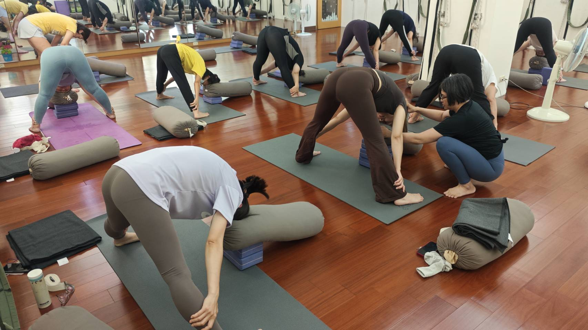
為什麼你按摩完，隔天又緊回去了？肩頸緊繃 · 閱讀約 4 分鐘 → 電腦族的脖子前傾，一天可以還原一點點嗎？肩頸緊繃 · 閱讀約 4 分鐘 →
電腦族的脖子前傾，一天可以還原一點點嗎？肩頸緊繃 · 閱讀約 4 分鐘 →
 落枕、緊到轉不了頭，先別急著硬扳肩頸緊繃 · 閱讀約 4 分鐘 →
落枕、緊到轉不了頭，先別急著硬扳肩頸緊繃 · 閱讀約 4 分鐘 →
 在辦公室就能做的 3 個肩頸放鬆，不用換衣服肩頸緊繃 · 閱讀約 6 分鐘 →
在辦公室就能做的 3 個肩頸放鬆，不用換衣服肩頸緊繃 · 閱讀約 6 分鐘 →
 頭痛、眼睛脹，有時候是脖子的問題肩頸緊繃 · 閱讀約 4 分鐘 →
拉筋拉越大力越有效？當心過度伸展的反效果肩頸緊繃 · 閱讀約 5 分鐘 →
頭痛、眼睛脹，有時候是脖子的問題肩頸緊繃 · 閱讀約 4 分鐘 →
拉筋拉越大力越有效？當心過度伸展的反效果肩頸緊繃 · 閱讀約 5 分鐘 →
 調整好的體態，怎麼避免「沒多久又打回原形」？肩頸緊繃 · 閱讀約 6 分鐘 →
天冷肩膀就往上縮？冬天肩頸更緊的原因與對策肩頸緊繃 · 閱讀約 6 分鐘 →
調整好的體態，怎麼避免「沒多久又打回原形」？肩頸緊繃 · 閱讀約 6 分鐘 →
天冷肩膀就往上縮？冬天肩頸更緊的原因與對策肩頸緊繃 · 閱讀約 6 分鐘 →
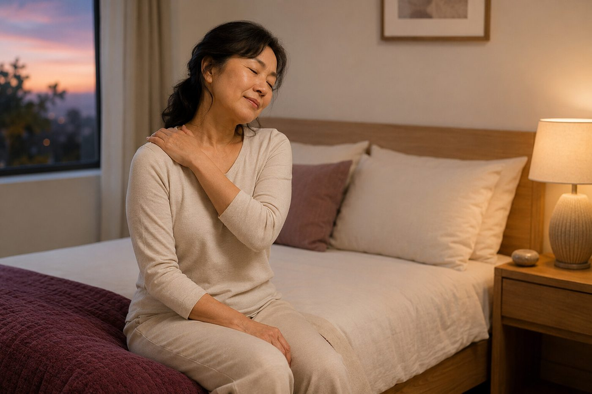
肩膀卡卡、某個角度就是抬不高，是五十肩嗎？肩頸緊繃 · 閱讀約 7 分鐘 → 下巴緊繃、有喀喀聲，是顳顎關節出問題嗎？肩頸緊繃 · 閱讀約 10 分鐘 → 產後、更年期的體態變化，跟一般肩頸緊有什麼不同？骨盆・下半身 · 閱讀約 5 分鐘 →
產後、更年期的體態變化，跟一般肩頸緊有什麼不同？骨盆・下半身 · 閱讀約 5 分鐘 →
 走路也看得出體態？從你的日常步態，讀懂身體的用力習慣與關節代償骨盆・下半身 · 閱讀約 5 分鐘 →
走路也看得出體態？從你的日常步態，讀懂身體的用力習慣與關節代償骨盆・下半身 · 閱讀約 5 分鐘 →
 腳是體態的地基：鞋子與足弓如何牽動全身骨盆脊椎骨盆・下半身 · 閱讀約 5 分鐘 →
買菜、抱孫、搬東西腰好吃力？中年後省力用身體的發力技巧骨盆・下半身 · 閱讀約 5 分鐘 →
站久了腰就痠？久站族的體態自救與站姿重心調整骨盆・下半身 · 閱讀約 5 分鐘 →
中年後站不太穩、單腳穿褲子會晃？談身體平衡感與防跌穩定力骨盆・下半身 · 閱讀約 5 分鐘 →
彎腰做家事就腰痠？學會用髖鉸鏈分擔腰椎壓力的日常調整骨盆・下半身 · 閱讀約 5 分鐘 →
腳是體態的地基：鞋子與足弓如何牽動全身骨盆脊椎骨盆・下半身 · 閱讀約 5 分鐘 →
買菜、抱孫、搬東西腰好吃力？中年後省力用身體的發力技巧骨盆・下半身 · 閱讀約 5 分鐘 →
站久了腰就痠？久站族的體態自救與站姿重心調整骨盆・下半身 · 閱讀約 5 分鐘 →
中年後站不太穩、單腳穿褲子會晃？談身體平衡感與防跌穩定力骨盆・下半身 · 閱讀約 5 分鐘 →
彎腰做家事就腰痠？學會用髖鉸鏈分擔腰椎壓力的日常調整骨盆・下半身 · 閱讀約 5 分鐘 →
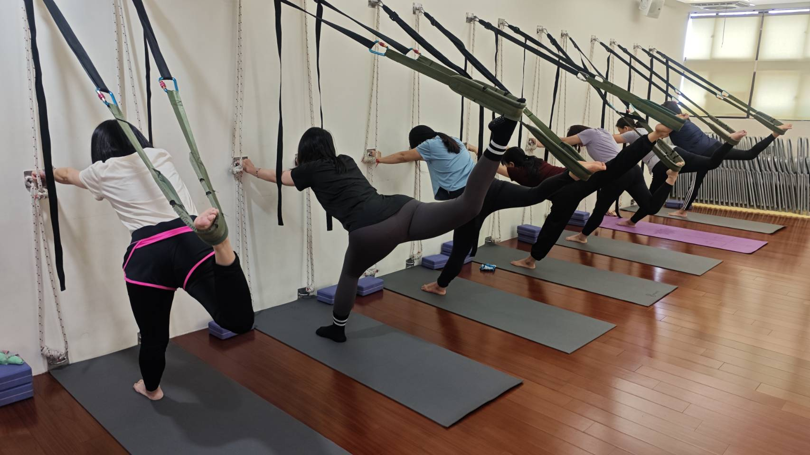
骨盆前傾，壁繩瑜伽怎麼練？跟核心訓練差在哪骨盆・下半身 · 閱讀約 6 分鐘 →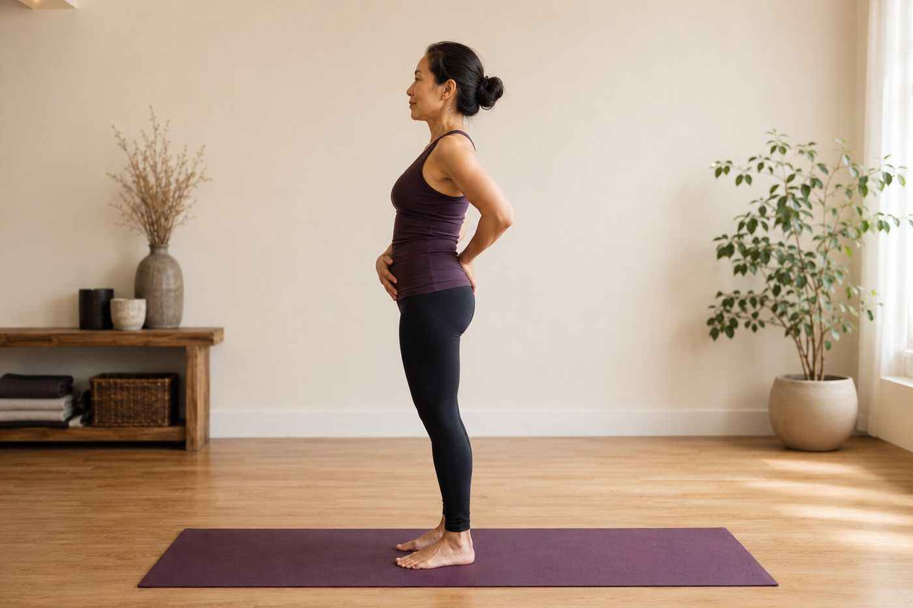
打噴嚏、大笑會漏尿？先搞懂骨盆底肌是怎麼回事骨盆・下半身 · 閱讀約 7 分鐘 → 閃到腰、腳踝扭傷後，怎麼安全重新開始活動？骨盆・下半身 · 閱讀約 9 分鐘 → 情緒真的會存在髖部裡嗎？從自律神經與腰大肌緊繃談起骨盆・下半身 · 閱讀約 7 分鐘 →
一天坐 8 小時，身體到底發生了什麼事？從骨盆到肩頸的姿勢代償整理久坐生活 · 閱讀約 5 分鐘 →
情緒真的會存在髖部裡嗎？從自律神經與腰大肌緊繃談起骨盆・下半身 · 閱讀約 7 分鐘 →
一天坐 8 小時，身體到底發生了什麼事？從骨盆到肩頸的姿勢代償整理久坐生活 · 閱讀約 5 分鐘 →
 選對椅子，比多做十個伸展還有用久坐生活 · 閱讀約 6 分鐘 →
選對椅子，比多做十個伸展還有用久坐生活 · 閱讀約 6 分鐘 →
 手機怎麼拿，脖子才不會受苦久坐生活 · 閱讀約 6 分鐘 →
手機怎麼拿，脖子才不會受苦久坐生活 · 閱讀約 6 分鐘 →
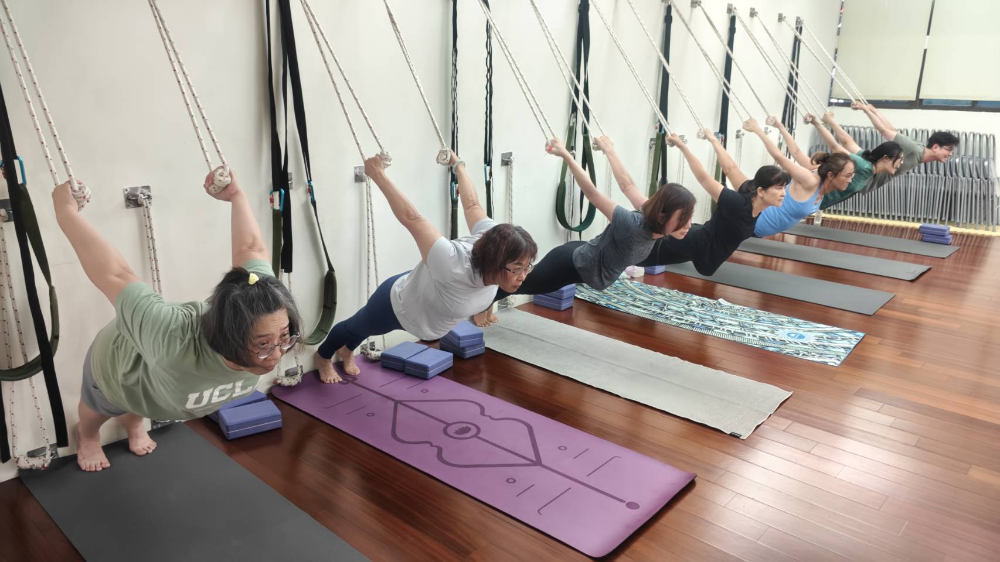
通勤族在車上就能做的姿勢微調久坐生活 · 閱讀約 6 分鐘 →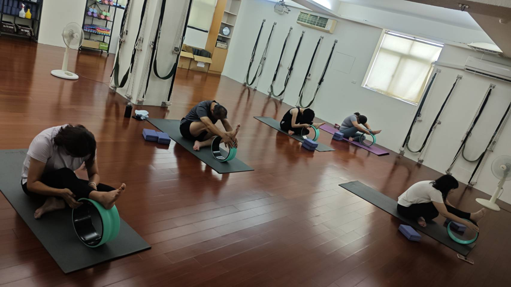
每坐 40 分鐘，站起來做這一件事久坐生活 · 閱讀約 6 分鐘 → 書包、低頭讀書、滑手機：孩子的體態什麼時候該注意？久坐生活 · 閱讀約 6 分鐘 →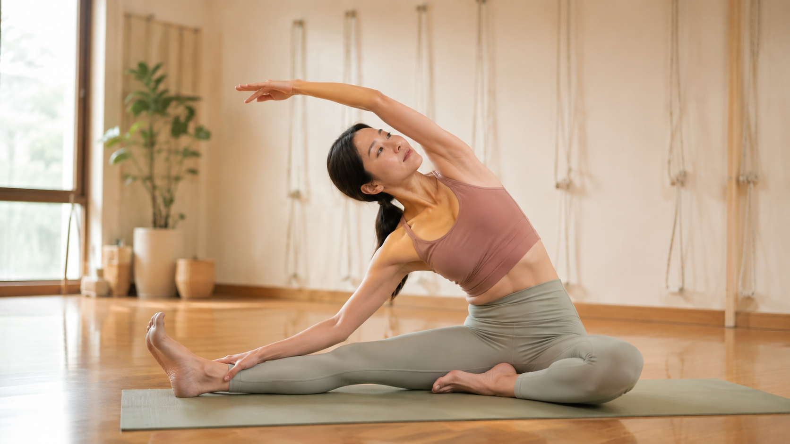
搭長途飛機後全身僵硬？出發前、飛行中、下機後怎麼安排久坐生活 · 閱讀約 6 分鐘 →第一堂上完，怎麼知道這間瑜伽教室適不適合我？壁繩入門 · 閱讀約 7 分鐘 →
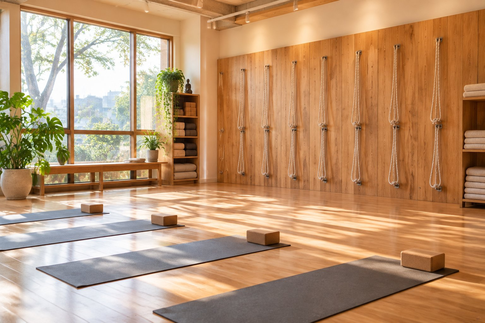
壁繩到底是什麼？第一次上課會做什麼？壁繩入門 · 閱讀約 6 分鐘 →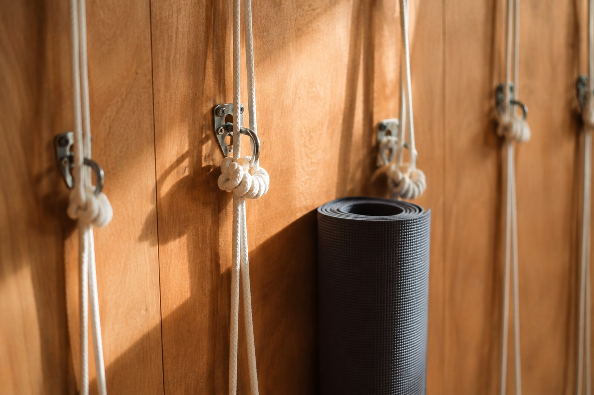
壁繩瑜伽 vs 一般瑜伽：差在哪？我現在比較適合哪一種？壁繩入門 · 閱讀約 6 分鐘 →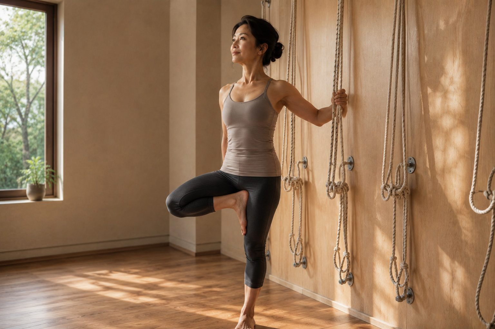
身體很硬、沒基礎，為什麼反而更適合壁繩壁繩入門 · 閱讀約 6 分鐘 → 中高齡練壁繩，安全嗎？要注意什麼壁繩入門 · 閱讀約 6 分鐘 →
中高齡練壁繩，安全嗎？要注意什麼壁繩入門 · 閱讀約 6 分鐘 →
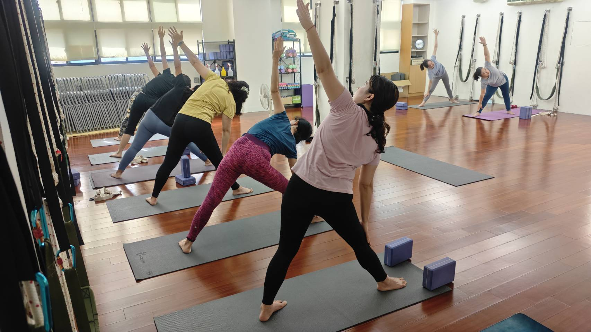
第一次上壁繩瑜伽要穿什麼、帶什麼？上課前準備清單壁繩入門 · 閱讀約 6 分鐘 → 壁繩瑜伽練多久會有感？先看懂進展，不急著套時間表壁繩入門 · 閱讀約 5 分鐘 →
壁繩瑜伽練多久會有感？先看懂進展，不急著套時間表壁繩入門 · 閱讀約 5 分鐘 →
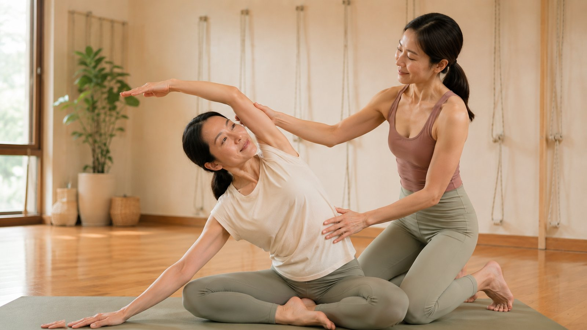
開始調整體態的前三個月，怎麼安排練習與回顧？壁繩入門 · 閱讀約 6 分鐘 →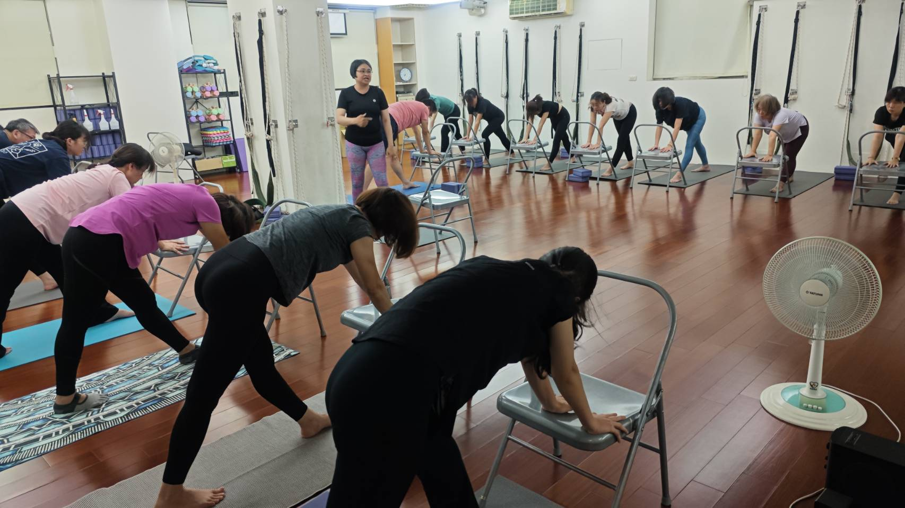
團課、一對一、零基礎入門班，第一次來該選哪一種？壁繩入門 · 閱讀約 6 分鐘 →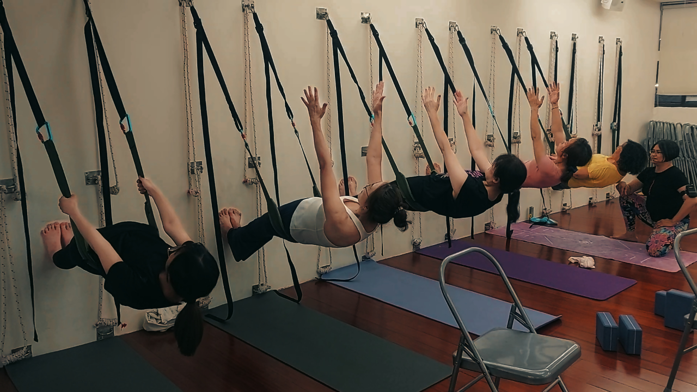
這幾種期待，壁繩瑜伽可能沒辦法馬上滿足你壁繩入門 · 閱讀約 6 分鐘 → 斷了一段時間沒運動，重新開始要從頭來過嗎？壁繩入門 · 閱讀約 6 分鐘 →
在家跟影片練，跟到教室上課差在哪？新手怎麼選壁繩入門 · 閱讀約 6 分鐘 →
斷了一段時間沒運動，重新開始要從頭來過嗎？壁繩入門 · 閱讀約 6 分鐘 →
在家跟影片練，跟到教室上課差在哪？新手怎麼選壁繩入門 · 閱讀約 6 分鐘 →
 早上練還是晚上練比較好？先看身體狀態跟生活怎麼安排壁繩入門 · 閱讀約 6 分鐘 →
瑜伽能取代重量訓練嗎？誠實講可以跟不行的部分壁繩入門 · 閱讀約 8 分鐘 →
早上練還是晚上練比較好？先看身體狀態跟生活怎麼安排壁繩入門 · 閱讀約 6 分鐘 →
瑜伽能取代重量訓練嗎？誠實講可以跟不行的部分壁繩入門 · 閱讀約 8 分鐘 →
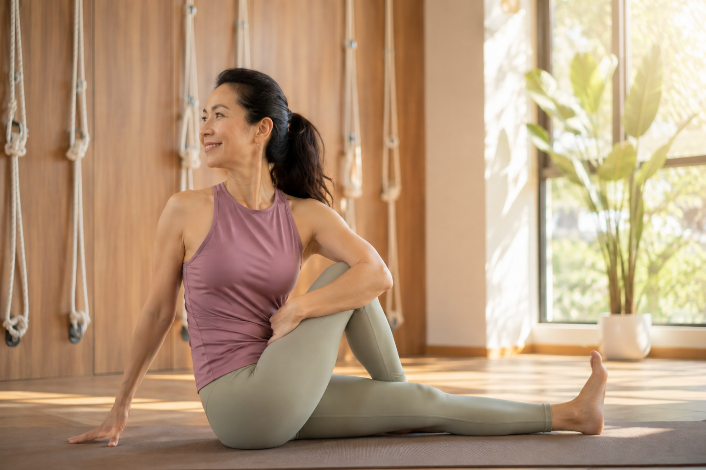
瑜伽跟單純伸展，差在哪個比較有效？壁繩入門 · 閱讀約 6 分鐘 → 瑜伽的說法哪些是真的，哪些只是行銷噱頭？壁繩入門 · 閱讀約 6 分鐘 →
瑜伽的說法哪些是真的，哪些只是行銷噱頭？壁繩入門 · 閱讀約 6 分鐘 →
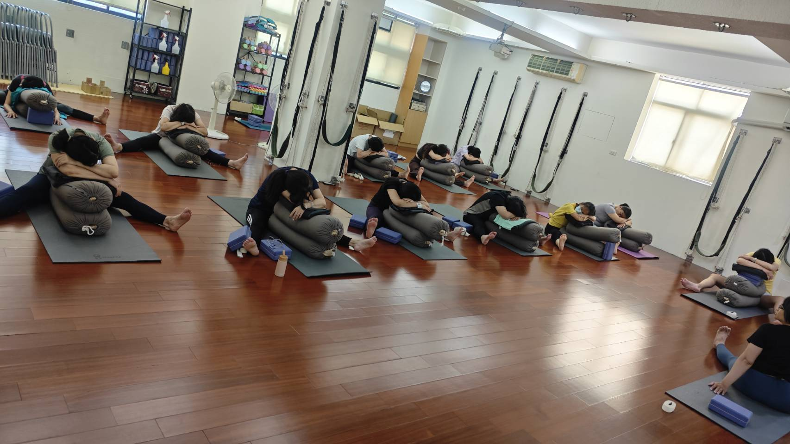
睡前 5 分鐘，讓拱起來的背慢慢躺平睡眠・放鬆 · 閱讀約 6 分鐘 →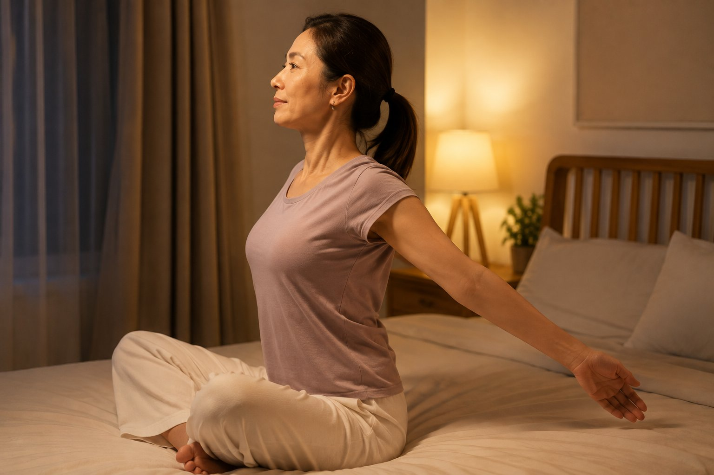
越累越睡不好？先把胸口打開：睡前放鬆與呼吸的日常整理睡眠・放鬆 · 閱讀約 4 分鐘 →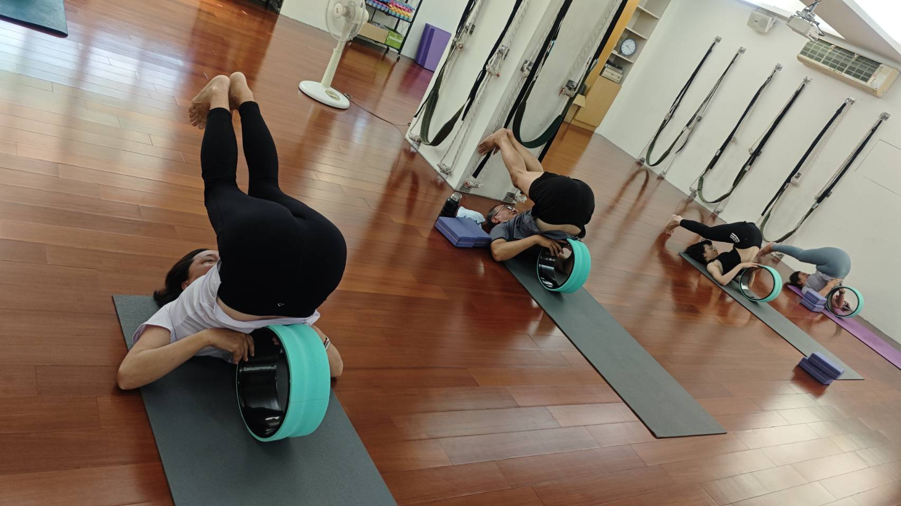
呼吸與肩頸緊繃：為什麼光叫自己放鬆，肩膀還是放不下來？睡眠・放鬆 · 閱讀約 4 分鐘 →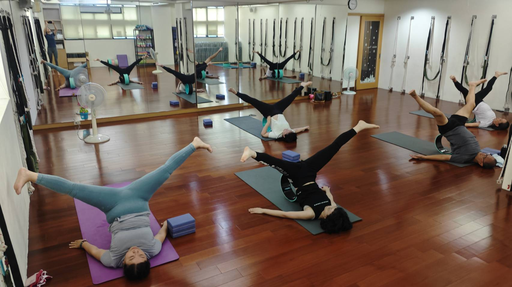
壓力大、生理期時，怎麼溫和地動一動睡眠・放鬆 · 閱讀約 6 分鐘 → 睡姿和枕頭，可能正在悄悄影響你的肩頸睡眠・放鬆 · 閱讀約 6 分鐘 →
感冒臥床好幾天，起來全身僵硬痠痛？怎麼慢慢找回節奏睡眠・放鬆 · 閱讀約 8 分鐘 →
睡姿和枕頭，可能正在悄悄影響你的肩頸睡眠・放鬆 · 閱讀約 6 分鐘 →
感冒臥床好幾天，起來全身僵硬痠痛？怎麼慢慢找回節奏睡眠・放鬆 · 閱讀約 8 分鐘 →
 生理期經痛，瑜伽真的能緩解嗎？睡眠・放鬆 · 閱讀約 6 分鐘 →
生理期經痛，瑜伽真的能緩解嗎？睡眠・放鬆 · 閱讀約 6 分鐘 →